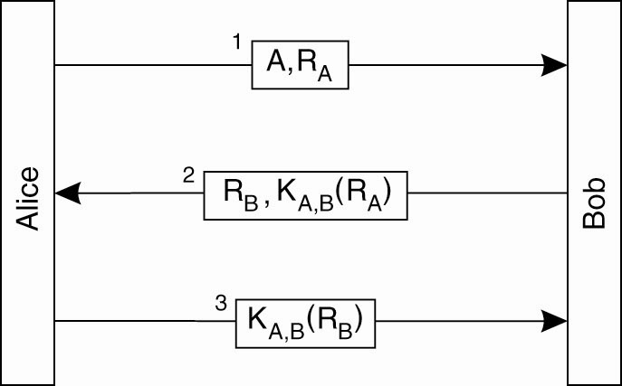
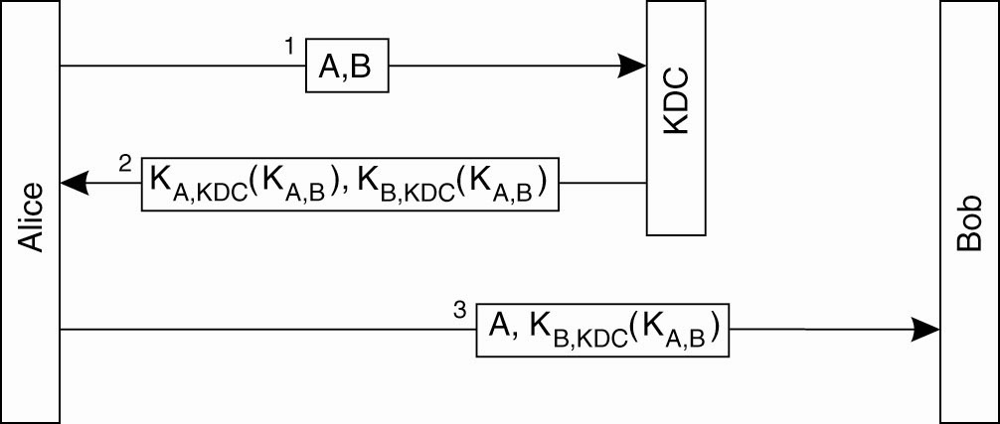
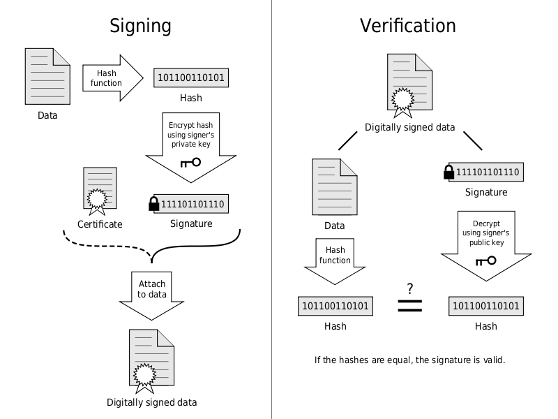

Cryptography: Strong cryptography
- Cryptographic strength measured by:
- Time and Resources it would require to recover the plaintext.
- Strong: is not possible to decipher
- before the end of the universe
- with all the planet computers
"There are two kinds of cryptography in this world: cryptography that will stop your
kid sister from reading your files, and cryptography that will stop major governments
from reading your files. This book is about the latter."
Bruce Schneier, Applied Cryptography: Protocols, Algorithms, and Source Code in C
Cryptography can be strong or weak, as explained above. Cryptographic strength is
measured in the time and resources it would require to recover the plaintext. The
result of strong cryptography is ciphertext that is very difficult to decipher without
possession of the appropriate decoding tool. How difficult? Given all of today's computing power and available time—even a billion computers doing a billion checks a
second—it is not possible to decipher the result of strong cryptography before the end
of the universe.
Cryptography: But more than Cryptography strength
- the strength of the cryptographic algorithm
- the secrecy of the key
The security of encrypted data is
entirely dependent on two things: the strength of the cryptographic algorithm and the
secrecy of the key.
Cryptography: aging
- aging
- secure becomes insecure (dead)
Cryptography: Encryption/Decryption: Two types
- Conventional cryptography
- Public key cryptography
Cryptography: Conventional: Names
- conventional cryptography
- secret-key encryption
- symmetric-key encryption
Cryptography: Conventional: Names
- conventional cryptography
- Symmetric
- secret-key
- shared-key
- or shared-secret!
Cryptography: Conventional: Names: Why?
- Symmetric: because the sender and receiver are required to share the same key,
- secret-key: this shared key must be kept secret; no one else is allowed to see the key.
- shared-key: Use the notation KA,B to denote a key shared by A and B.
Cryptography: Conventional: Picture

Cryptography: Conventional: Origin and Examples
- Caesar's cipher (OLD!)
- Data Encryption Standard (DES)
Cryptography: Conventional: example: Caesar's cipher
Starting with
ABCDEFGHIJKLMNOPQRSTUVWXYZ
and sliding everything up by 3, you get
DEFGHIJKLMNOPQRSTUVWXYZABC
where D=A, E=B, F=C, and so on.
Using this scheme, the plaintext, 'SECRET' encrypts as 'VHFUHW'.
key is 3
Cryptography: Conventional: Pros/Cons
- Pros: It is very fast.
- Cons: Problem: key distribution
the persistent problem with conventional encryption is key distribution: how do you get the key to the recipient without someone
intercepting it?
Cryptography: Public key
- The problems of key distribution:
- solved by public key cryptography
Cryptography: Public key: Origin
- Concept introduced by Whitfield Diffie and Martin Hellman (1975).
- British Secret Service: J H Ellis: few years before (1970)
Cryptography: Public key: 2 sides, duality
- Encryption: sender encrypts with recipient pub key
- Signature: sender signs with his private key
Cryptography: Public key: Encryption: Schema

Cryptography: Public key: Signature: Schema
Cryptography: Uses of digital signatures
- Authentication
- Integrity (better than hash)
- Non-repudiation
Cryptography: Public key: Examples
- Elgamal (named for its inventor, Taher Elgamal),
- RSA (named for its inventors Rivest, Shamir, and Adleman),
- Diffie-Hellman
- DSA, the Digital Signature Algorithm, (invented by David Kravitz, for signature).
Cryptography: Public key: Pros/Cons
- Cons:
- 1000(!?) times slower than conventional
- limit on size(!)
- Pros: no key issue
Cryptography: hash
- Once the hash is exposed....
Cryptography: hash: attack
Cryptography: hash: attack
(Brute force) vs (ease of use)
Cryptography: hash: attack
Cryptography: hash: attack: protection: salt
Cryptography: hash: attack
Cryptography: hash: attack
Cryptography: hash: attack
- setup: wo ATI Radeon 7970 cards ~ 16000 M c/s with MD5.
- oclHashcat-lite
Cryptography: hash: attack
- full range of a common US keyboard
all 6 character password MD5s 47 seconds
all 7 character password MD5s 1 hour, 14 minutes
all 8 character password MD5s ~465 days
all 9 character password MD5s fuggedaboudit
Cryptography: hash: attack
Cryptography: hash: attack: speed: algos
- M/s=number of generated hashes
MD5 23070.7 M/s
SHA-1 7973.8 M/s
SHA-256 3110.2 M/s
SHA-512 267.1 M/s
NTLM 44035.3 M/s
DES 185.1 M/s
WPA/WPA2 348.0 k/s
Cryptography: hash: attack: solution
- passwords are 12 characters or more
- pass phrases
- Windows 2k and higher support passwords of up to 127 unicode characters.
Cryptography: hash: attack
http://blog.csdn.net/wangjiannuaa/article/details/6741650
Cryptography: hash: attack
MD4 is considered to be significantly stronger than DES as
- it allows for longer password lengths,
- it allows for distinction betweenuppercase and lowercase letters
- it does not split the password intosmaller, easier to crack chunks.
Perhaps the biggest complaint with NTLMv2 created hashes is that:
Windows does not utilize a technique called salting.
http://blog.csdn.net/wangjiannuaa/article/details/6741650
authentication: protocols
- secure?
- building up on cryptography
Authentication: protocols: Symmetric
Challenge-Response
Authentication: protocols: Challenge-Response
Example: Bob and Alice Again
Alice and Bob are abbreviated by A and B, respectively, and their shared key is denoted as KA,B.
One party challenges the other to a response that can be correct only if the other knows the shared secret key.
also known as challenge-response protocols.
- Alice sends her identity to Bob (message 1), indicating that she wants to set up a communication channel between the two.
-
Bob sends a challenge RB to Alice, shown as message 2.
· Such a challenge could take the form of a random number.
· Alice must encrypt the challenge with the secret key KA,B. that she shares with Bob, and return the encrypted challenge to Bob. This response is shown as message 3 containing KA,B.(RB).
Authentication based on a shared secret key, using a ‘challenge response’ protocol.
Note: R is a random number.
-
When Bob receives the response KA,B.(RB) to his challenge RB, he can decrypt the message using the shared key again to see if it contains RB.
-
· If so, he then knows that Alice is on the other side, for who else could have encrypted RB with KA,B in the first place?
Alice has not yet verified that it is Bob is on the other side of the channel.
-
· She sends a challenge RA (message 4), which Bob responds to by returning KA,B.(RA), shown as message 5.
When Alice decrypts it with KA,B and sees her RA, she knows she is talking to Bob.
Authentication: protocols: Challenge-Response: WRONG!

Authentication: protocols: Challenge-Response: WRONG: reflection attack

The ‘reflection attack’. - Chuck wants Bob to think he is Alice, so he starts up a second session to trick Bob.
Chuck's goal is to set up a channel with Bob so that Bob believes he is talking to Alice.
Chuck can establish this if he responds correctly to a challenge sent by Bob
o e.g, by returning the encrypted version of a number that Bob sent.
Without knowledge of KA,B., only Bob can do such an encryption, and this is precisely what Chuck tricks Bob into doing.
- 1. Chuck starts out by sending a message containing Alice's identity A, along with a challenge RC.
-
2. Bob returns his challenge RB and the response KA,B(RC) in a single message.
-
3. Chuck needs to prove he knows the secret key by returning KA,B(RB) to Bob.
-
o He does not have KA,B.
-
o He attempts to set up a second channel to let Bob do the encryption for him.
-
4. Chuck sends A and RB in a single message as before, but now pretends that he wants a second channel. This is shown as message 3
-
5. Bob not recognizing that he, himself, had used RB before as a challenge, responds with KA,B(RB) and another challenge RB2, shown as message 4.
-
6. At that point, Chuck has KA,B(RB) and finishes setting up the first session by returning message 5 containing the response KA,B(RB), which was originally requested from the challenge sent in message 2.
Mistake 1: the two parties in the new version of the protocol were using the same challenge in two different runs of the protocol.
Better Design: always use different challenges for the initiator and for the responder.
In general, letting the two parties setting up a secure channel do a number of things identically is not a good idea.
Mistake 2: Bob gave away valuable information in the form of the response KA,B(RC) without knowing for sure to whom he was giving it.
Not violated in the original protocol, in which Alice first needed to prove her identity, after which Bob was willing to pass her encrypted information.
Authentication: protocols: Symmetric: Problem: scalability
Problem with a shared secret key for authentication: scalability
Authentication: protocols: Symmetric: Solution 1: KDC
- Key Distribution Center: N keys
- (Solution 2: session keys SSL)
authentication: ntlm
Protect Your Windows Network: From Perimeter to Data
by Jesper M. Johansson and Steve Riley (May 30, 2005)
Chapter 11. Passwords and Other Authentication Mechanisms
authentication: ntlm
http://msdn.microsoft.com/en-us/library/cc236715.aspx
Therefore, applications are generally advised not to use NTLM.
5.1 Security Considerations for Implementers
5 out of 6 rated this helpful - Rate this topic
Implementers should be aware that NTLM does not support any recent cryptographic methods, such as AES or SHA-256. It uses cyclic redundancy check (CRC) or message digest algorithms ([RFC1321]) for integrity, and it uses RC4 for encryption. Deriving a key from a password is as specified in [RFC1320] and [FIPS46-2]. Therefore, applications are generally advised not to use NTLM.
The NTLM server does not require the NTLM client to send the MIC, but sending the MIC when the timestamp is present greatly increases security. Although implementations of NLMP will work without support for MIC, they will be vulnerable to message tampering.
authentication: ntlm: ntlmv1 and ntlmv2
authentication: ntlm: ntlmv1 and LM

http://flylib.com/books/en/1.376.1.112/1/
Protect Your Windows Network: From Perimeter to Data by Jesper M. Johansson and Steve Riley (May 30, 2005)
Chapter 11. Passwords and Other Authentication
Mechanisms
any password that generates a particular hash is going to result in a successful logon. In addition, in late 2004, a paper was published describing how to create collisions in MD4, using pen and paper! Clearly, MD4 is no longer a secure algorithm. This does not mean that all systems using MD4 as a password storage algorithm should be changed. We need to take into account what it takes to get password hashes on those systems first. The best protection against password attacks is, and always has been, to stop attackers from getting your hashes. We return to this in a few pages.
How Passwords Are Used
Passwords are obviously used for authentication. Windows supports many different kinds of authentication. The four main protocols are LM authentication, which uses the LM hash, NTLM (sometimes referred to as NTLMv1), NTLMv2, and Kerberos, all of which use the NT hash. Kerberos is well documented in RFCs 1510 (http://www.ietf.org/rfc/rfc1510.txt?number=1510) and 1964 ( http://www.ietf.org/rfc/rfc1964.txt?number=1964), and therefore we do not deal with it further here. The other three are interesting, however.
LM authentication is designed primarily for backward compatibility. It is used to authenticate access from Windows 3.11, Windows 95, and Windows 98. If Windows 95 or 98 has the Directory Services Client (see KB 323466), they can use some version of NTLM instead. LM authentication is also used to authenticate to servers running Windows 95 and 98 if they are using share-level passwords
NTLM authentication has been the default authentication protocol in Windows NT since NT 3.1. It was only replaced by Kerberos in Windows 2000. It is still used in many situations, such as when authenticating in a Windows NT 4.0 domain or in a workgroup and when authenticating between systems in a Windows 2000 or higher domain and systems outside the domain or that have no trust relationship with the domain. Within a Windows 2000 or higher domain and between systems that have trust relationships based on such domains, such as within a forest, Kerberos is always usedexcept in one situation. The exception is when a resource is accessed using an IP address rather than a host name. Kerberos is based on host names. Because Windows DNS does not create reverse lookup zones by default, the protocol cannot rely on a way to resolve IP addresses to host names . Therefore, it always falls back to either NTLM or NTLMv2 in that situation. As described earlier, the choice of NTLM or NTLMv2 depends on the configuration of the client.
There are several very important points to be made about Figure 11-4. First, the client always sends both authentication protocols, regardless of whether the server supports them. While the client is processing the challenge, the server does the same, using the stored hashes discussed earlier. Upon receipt of the response from the client, the server compares the NTLM result it calculated to the result the client sent. If the two match, the client is authenticated. If not, it compares the LM result it calculated to the one the client sent. If neither the NTLM nor the LM results match, the server generates an authentication failure message.
Notice that the algorithm used is DES. Because DES is no longer considered cryptographically secure, neither is the authentication sequence. If an attacker manages to sniff both the challenge and the response off the wire, the password can be brute forced from the authentication sequence. It is just one additional encryption operation. Tools such as LC5 (the latest version of the popular password cracker L0phtCrack) can sniff these sequences off the wire and crack them.
Take another look at Figure 11-4. Pay attention to the secret data used in the authentication process. The only secret used is the hash . The actual response is computed as follows:
1.
Take the 8-byte challenge.
2.
Pad the relevant hash with 5 nulls, making it 168 bits.
3.
Split the hash+nulls into three chunks and use each as a key to encrypt the challenge.
4.
Concatenate the results from Step 3.
As this description shows, the security of the entire authentication algorithm is based on the protection of the hash. In other words, if an attacker has access to the hash, he has everything he needs to authenticate as that user. The hashes are plaintext equivalent . An attacker simply needs a tool that can compute and transmit the response based on an arbitrary hash. This is known as a pass-the-hash attack. Put another way, if bad guys have your password hashes, cracking is unnecessary. You have already been hacked!
NOTE: Password hashes are plaintext equivalent in challenge-response protocols. In other words, if a bad guy has the password hashes, there is no need to crack them. All that is needed is a tool that can generate responses based on arbitrary hashes. This means that hashes must be very well protected. To prevent this type of attack the only solution is to not not let bad guys get to your password hashes.
authentication: ntlm: ntlmv2
http://flylib.com/books/en/1.376.1.112/1/
NTLMv2
The most misunderstood authentication protocol in Windows is NTLMv2. NTLMv2 first appeared in Windows NT 4.0 Service Pack 4 and was designed to combat certain weaknesses such as replay vulnerabilities and the weak DES encryption in NTLM. Although NTLMv2 is technically considered a trade secret, certain facts are well known. Consider Figure 11-5.
Figure 11-5. NTLMv2 authentication.
As Figure 11-5 shows, the NTLMv2 protocol takes the place of the NTLM protocol in the authentication messages. A server that is NTLMv2 capable first checks whether the client's response could be an NTLMv2 response. This is done by comparing the length of the response, because the NTLM response is fixed-length and the NTLMv2 response is variable length, but always longer than the NTLM response. If the client's response is not an NTLMv2 response, or if it did not match the NTLMv2 response the server calculated, the server falls back to the same behavior as a non-NTLMv2-compatible server. If all three checks fail, the server generates a failed authentication message. This means that if the client does not support NTLMv2 but the server requires it, the only error message the client will see is "bad username or password." Because there is no negotiation of the authentication protocols, there is no way for the client to know why it failed. Also notice that the NTLMv2 protocol uses the NT hash. There is no separate NTLMv2 hash .
KDC principle: Problem
If Alice wants to set up a secure channel with Bob, she can do so with the help of a (trusted) KDC.
The KDC hands out a key to both Alice and Bob that they can use for communication,
Principle of using a KDC.
- Alice sends a message to the KDC, telling it that she wants to talk to Bob.
The KDC returns a message containing a shared secret key KA,B that she can use.
- The message is encrypted with the secret key KA,KDC that Alice shares with the KDC.
- The KDC sends KA,B to Bob, but now encrypted with the secret key KB,KDC it shares with Bob.
Drawbacks :
Alice may want to set up a secure channel with Bob even before Bob had received the shared key from the KDC.
The KDC is required to pass Bob the key.
KDC principle: Solution: Ticket

Solution: ticket
- KDC passes KB,KDC(KA,B) back to Alice and lets her connect to Bob.
- The message KB,KDC(KA,B) is also known as a ticket.
- It is Alice's job to pass this ticket to Bob.
- Note that Bob is still the only one that can make sensible use of the ticket, as he is the only one besides the KDC who knows how to decrypt the information it contains.
Needham-Schroeder protocol is a multiway challenge-response protocol

When Alice wants to set up a secure channel with Bob, she sends a request to the KDC containing a challenge RA, along with her identity A and that of Bob.
The KDC responds by giving her the ticket KB,KDC(KA,B), along with the secret key KA,B that she can subsequently share with Bob.
· The challenge RA1 that Alice sends to the KDC along with her request to set up a channel to Bob is also known as a nonce.
· A nonce is a random number that is used only once, such as one chosen from a very large set.
· Purpose of a nonce is to uniquely relate two messages to each other
· e.g. message 1 and message 2.
· by including RA1 again in message 2, Alice will know for sure that message 2 is sent as a response to message 1, and that it is not a replay of an older message.
· Message 2 also contains B, the identity of Bob.
· By including B, the KDC protects Alice against the following attack.
After the KDC has passed the ticket to Alice, the secure channel between Alice and Bob can be set up.
· Alice sends message 3, which contains the ticket to Bob, and a challenge RA2 encrypted with the shared key KA,B that the KDC had just generated.
Bob then decrypts the ticket to find the shared key, and returns a response RA2 - 1 along with a challenge RB for Alice.
NOTE: by returning RA2 - 1 and not just RA2, Bob not only proves he knows the shared secret key, but also that he has actually decrypted the challenge.
· This ties message 4 to message 3 in the same way that the nonce RA tied message 2 to message 1.
Weak Point:
If Chuck got an old key KA,B, he could replay message 3 and get Bob to set up a channel.
Bob will then believe he is talking to Alice, while, in fact, Chuck is at the other end.
Need to relate message 3 to message 1 - make the key dependent on the initial request from Alice to set up a channel with Bob.
Protection against malicious reuse of a previously generated session key in the Needham-Schroeder protocol.

Solution: incorporate a nonce in the request sent by Alice to the KDC.
The nonce has to come from Bob: this assures Bob that whoever wants to set up a secure channel with him, will have gotten the appropriate information from the KDC.
Alice first requests Bob to send her a nonce RB1, encrypted with the key shared between Bob and the KDC.
Alice incorporates this nonce in her request to the KDC, which will then decrypt it and put the result in the generated ticket.
Bob will know for sure that the session key is tied to the original request from Alice to talk to Bob.
Authentication: Kerberos: Authentication in Kerberos.
Example: Kerberos (Steiner et al., 1988)
· Kerberos is a network authentication protocol.
· It is designed to provide strong authentication for client/server applications by using secret-key cryptography.
Kerberos was developed at M.I.T. and is based on the Needham-Schroeder authentication protocol.
Two different versions of Kerberos- version 4 (V4) and version 5 (V5).
V5 being more flexible and scalable.
Two different components:
Authentication Server (AS) - responsible for handling a login request from a user.
AS authenticates a user and provides a key that can be used to set up secure channels with servers.
Ticket Granting Service (TGS) - sets up secure channels.
The TGS hands out special messages, known as tickets, that are used to convince a server that the client is really who he or she claims to be.
Example: Alice sets up a secure channel with server Bob.
For Alice to log onto the system, she can use any workstation available. The workstation sends her name in plaintext to the AS, which returns a session key KA,TGS and a ticket that she will need to hand over to the TGS.
The ticket that is returned by the AS contains the identity of Alice, along with a generated secret key that Alice and the TGS can use to communicate with each other. The ticket itself will be handed over to the TGS by Alice. Therefore, it is important that no one but the TGS can read it. For this reason, the ticket is encrypted with the secret key KAS,TGS shared between the AS and the TGS.
Authentication in Kerberos.
Message 1 - Alice types in her login name at a workstation.
Message 2 - contains login name and is sent to the AS.
Message 3 - contains the session key KA,TGS and the ticket KAS,TGS(A,KA,TGS).
To ensure privacy, message 3 is encrypted with the secret key KA,AS shared between Alice and the AS.
Message 4 - workstation prompts Alice for her password
Message 5 – PWD returned to workstation which generates shared key KA,AS and find session key KA,TGS.
Message 6 –to talk to Bob, she requests the TGS to generate a session key for Bob.
The fact that Alice has the ticket KAS,TGS(A,KA,TGS) proves that she is Alice.
Message alsocontains a timestamp, t, encrypted with the secret key shared between Alice and the TGS.
Authentication: Kerberos: Setting up a secure channel with Bob

1. Alice sends to Bob a message containing the ticket she got from the TGS, along with an encrypted timestamp.
2. When Bob decrypts the ticket, he notices that Alice is talking to him, because only the TGS could have constructed the ticket.
· He also finds the secret key KA,B, allowing him to verify the timestamp.
· At that point, Bob knows he is talking to Alice and not someone maliciously replaying message 1.
· By responding with KA,B(t + 1), Bob proves to Alice that he is indeed Bob.
Authentication: ldap: bind
Authentication: ldap: bind,search,bind
Authentication: Kerberos: Secure
- Kerberos is secure since it never transmits passwords over the network in the clear
Authentication: Kerberos: Needham-Schroeder Protocol
- Needham-Schroeder Protocol
- wikipedia
- Needham-Schroeder Symmetric Key Protocol
- published a paper in
December of 1978
Authentication: Kerberos: Needham-Schroeder Protocol: flaw
http://www.mitre.org/news/the_edge/february_01/guttman.html
http://csis.pace.edu/~marchese/CS865/Lectures/Chap9/Chap9New/Chapter9.html ********
Authentication: Kerberos: Notation
- http://en.wikipedia.org/wiki/Security_protocol_notation
Authentication: Kerberos: GSSAPI
- Generic Security Services API
- RFC 2743, which documents the basic GSSAPI message types,
- RFC 1509, which defines the C language bindings and API, and
- RFC 1964, which defines the Kerberos 5 GSSAPI mechanism.
Authentication: Kerberos: SPNEGO
- Simple and Protected GSSAPI Negotiation Mechanism
- SPNEGO, documented in RFC 2478
Authentication: Kerberos:
Authentication: Kerberos:
Authentication: Kerberos: Trusted third-party
Authentication: Kerberos: Picture?
Authentication: Kerberos: Boxes
Authentication: Kerberos: Symmetric Crypto
Authentication: Kerberos: Tickets
Authentication: Kerberos: port 88 TCP/UDP
- KRB5KRB_ERR_RESPONSE_TOO_BIG
Authentication: Kerberos: Reference
Chap 9 of Distributed Systems:
Principles and Paradigms (2nd Edition) [Hardcover]
Andrew S. Tanenbaum (Author), Maarten Van Steen (Author)
Authentication: Kerberos: Implementations
Authentication: Kerberos: Microsoft
Authentication: Kerberos: AD: DNS
- _kerberos._udp.DnsDomainName
- /etc/krb5.conf
- http://tools.ietf.org/id/draft-ietf-krb-wg-krb-dns-locate-02.txt
http://tools.ietf.org/id/draft-ietf-krb-wg-krb-dns-locate-02.txt
http://technet.microsoft.com/en-us/library/cc961719.aspx
http://web.mit.edu/kerberos/krb5-1.5/krb5-1.5.4/doc/krb5-admin/Hostnames-for-KDCs.html
Authentication: Kerberos: AD: ldap
Authentication: Kerberos: AD: kerberos
Cryptography: Note: Hash functions
- The young man and the old camel > Hash=Sum of bytes
- The young camel and the old man > Hash=Sum of bytes
- cryptographic strength
A trivial example of a hash function is to add all of the byte values of a message together, and take the sum
modulus a maximum number say, 1024. It is not possible to reconstruct the original input stream from this
sum. Another property of a hash algorithm is its cryptographic strength, or the ability for attackers to craft
input designed to produce a given hash value.
Cryptography: SSL/TLS: Combining the two!
SOLUTION: Public key AND Conventional cryptography
- distribute the key with Public key cryptography
- distribute the content with Conventional cryptography
Cryptography: SSL/TLS: names
- key: private key
- cert: public key
Cryptography: SSL/TLS: protocol idea, simple

Cryptography: SSL/TLS: problem: man-in-the-middle
Cryptography: SSL/TLS: CA: solution to man-in-the-middle
Cryptography: SSL/TLS: CA: signature

Cryptography: SSL/TLS: CA: CRL
- CERT Revocation list
- http://crl.cacert.org/revoke.crl
- DigiNotar
Cryptography: SSL/TLS: names
- SSL: Secure Socket Layer (Sockets is TCP/IP API)
- TLS: Transaction Layer Security (IETF standard SSL)
Cryptography: SSL/TLS: where in the stack?

Cryptography: SSL/TLS: network layers pic
Cryptography: SSL/TLS: Pros/Cons
- Pros:
- Easy to implement and use
- Deployed in most browsers, servers
- Cons:
- Protects only if used by appl.
- Vulnerable to Clogging (DOS)
- TCP only (no UDP)
- Headers exposed
Cryptography: SSL/TLS: Alternative 1: Add to Each Application
Cryptography: Alternative 1: Pros/Cons
- Pros:
- easy, independent
- awareness of semantics
- Cons:
- Change each app, computer...
- Internet (network) Layer
- hard, wasteful, error-prone,
- must trust all computers
- No protection for headers
Cryptography: Alternative 1: Examples
- S/Key (login)
- Payment protocols, e.g. SET (credit card payments)
- Tools: XML security, Kerberos, ...
- Secure E-mail (S/MIME,PGP,...)
Cryptography: Alternative 2: IP Security
Cryptography: Alternative 2: Pros/Cons
- Pros:
- Protect all applications, data (IP header, addresses)
- No change to applications
- Gateway can protect many hosts
- Anti-clogging mechanisms
- Implemented by operating systems, Routers, ...
- Standard
- Cons:
- Implementation,
- interoperability, availability
- Application awareness/control is difficult
Cryptography: SSL/TLS: Easy: Proxy
- stunnel: impas, https, etc..
Cryptography: SSL/TLS: Key and Cert formats
- X.509
- DER(Distinguished Encoding Rules) binary
- PEM (Privacy Enhanced Mail) ascii base64 encode
- PKCS#12 file (.pfx or .p12) archive
Cryptography: SSL/TLS: Swiss Army Knife
- openssl
- library + command line
- (keytool)
Cryptography: SSL/TLS: LABS
Cryptography: SSL/TLS: LAB 1: encryption
# Conventionnal encryption:
# Encrypt a file using triple DES in CBC mode with password on command line
openssl enc -des3 -e -k mypassword -in file.txt -out file.des3
openssl enc -des3 -d -k mypassword -in file.des3 -out file_dec.txt
# Public key encryption:
# generate the private key:
openssl genrsa -out private.pem 1024
# generate the publick key:
openssl rsa -in private.pem -out public.pem -outform PEM -pubout
# encrypt:
# -pubin: the input file is an RSA public key.
# -certin: the input is a certificate containing an RSA public key.
openssl rsautl -encrypt -inkey public.pem -in file_small.txt -out file_small.ssl -pubin
openssl rsautl -decrypt -inkey private.pem -in file_small.ssl -out file_small_dec.txt
# M: max number of bytes
# which can be encrypted with a particular key size with the following:
# M=((KeySize - 384) / 8) + 37
Cryptography: SSL/TLS: LAB 2: Client SSL 1
# Create the CA Key and Certificate for signing Client Certs
openssl genrsa -des3 -out ca.key 4096
openssl req -new -x509 -days 365 -key ca.key -out ca.crt -subj '/CN=Alex CA'
# Create the Server Key, CSR, and Certificate
openssl genrsa -des3 -out server.key 1024
(or
openssl genrsa -out server.key 1024)
openssl req -new -key server.key -out server.csr -subj '/CN=server1.foo'
# We're self signing our own server cert here. This is a no-no in production.
openssl x509 -req -days 365 -in server.csr -CA ca.crt -CAkey ca.key -set_serial 01 -out server.crt
# Create the Client Key and CSR
openssl genrsa -des3 -out client.key 1024
openssl req -new -key client.key -out client.csr -subj '/CN=alfresco-system'
# Sign the client certificate with our CA cert. Unlike signing our own server cert, this is what we want to do.
openssl x509 -req -days 365 -in client.csr -CA ca.crt -CAkey ca.key -set_serial 02 -out client.crt
Cryptography: SSL/TLS: LAB 2: Client SSL 2
encryption, signature (authentication X2)
# check the subject of the cert
openssl x509 -subject -issuer -noout -in ca.crt
openssl x509 -subject -issuer -noout -in client.crt
openssl x509 -subject -issuer -noout -in server.crt
# or more details
openssl x509 -text -noout -in ca.crt
openssl x509 -text -noout -in client.crt
openssl x509 -text -noout -in server.crt
Cryptography: SSL/TLS: LAB 2: Client SSL 3
# package the client private and public keys in a P12
(openssl pkcs12 -export -out client.p12 -in client.crt -inkey client.key -chain) # requires the CA cert in standard location
openssl pkcs12 -export -out client.p12 -in client.crt -inkey client.key -certfile ca.crt
# print some info (check CA is included)
openssl pkcs12 -info -in client.p12 -nodes
openssl pkcs12 -info -in client.p12 -nokeys
Cryptography: SSL/TLS: LAB 2: Client SSL 4
# in firefox https://server1.foo:443/index.html
This Connection is Untrusted
The certificate is not trusted because the issuer certificate is not trusted.
# http://www.cyberciti.biz/faq/firefox-adding-trusted-ca/
# advanced->encryption
openssl s_client -CAfile ssl/compute/ca/ca.crt -connect server1.foo:443
openssl s_server -cert server.crt -key server.key -www
https://server1.foo:4433/
http://forums.mozillazine.org/viewtopic.php?f=38&t=372781
If you dont know your master password paste this in your address bar of firefox:
chrome://pippki/content/resetpassword.xul
and click Reset button. Next time you will be prompt for a new master password for Firefox!
(Error code: sec_error_reused_issuer_and_serial)
Cryptography: SSL/TLS: LAB 2: Client SSL 5
<VirtualHost server1.foo:443>
DocumentRoot "/var/www/SSL"
ServerName "server1.foo"
SSLEngine on
CustomLog logs/ssl_request_log "%t %h %{SSL_PROTOCOL}x %{SSL_CIPHER}x %{SSL_CLIENT_S_DN_CN}x \"%r\" %b"
SSLCipherSuite HIGH:MEDIUM
SSLProtocol all -SSLv2
SSLCertificateFile /home/madon/ssl/compute/ca/server.crt
SSLCertificateKeyFile /home/madon/ssl/compute/ca/server.key
SSLCertificateChainFile /home/madon/ssl/compute/ca/ca.crt
SSLCACertificateFile /home/madon/ssl/compute/ca/ca.crt
<Location "/">
SSLRequireSSL
Options All
Order allow,deny
Allow from all
</Location>
# http://httpd.apache.org/docs/2.0/ssl/ssl_howto.html#certauthenticate
SSLVerifyClient none
<Directory /var/www/SSL/Certneeded>
SSLVerifyClient require
SSLVerifyDepth 5
SSLCACertificateFile /home/madon/ssl/compute/ca/ca.crt
SSLOptions +FakeBasicAuth
SSLRequireSSL
SSLRequire %{SSL_CLIENT_S_DN_CN} eq "alfresco-system"
</Directory>
</VirtualHost>
Cryptography: SSL Questions
- Question: How old is conventional cryptography?
- Question: How old is Public key cryptography?
- Question: What is the difference between encryption and signature?
- Question: Is PEM binary or ASCII?
- Question: Is RSA a public key or conventional algorithm?
- Question: Is DES a public key or conventional algorithm?
- Question: Is SSL/TLS using public key or conventional cryptography?
- Question: At what level in the TCP/IP stack is SSL/TLS
- Question: Can SSL/TLS be used over UDP?
- Question: Can SSL/TLS be used to secure other protocols than HTTP?
LDAP sync: Issue example
- empty groups
- ldap.synchronization.queryBatchSize
- jconsole
authentication: kerberos: Kerberos and Share
authentication: kerberos: Kerberos and Share
man kinit:
-f request forwardable tickets.
klist -ef
you should see "Flags: FRIA" on your TGT and "Flags: FRAO" on your TGS
to expect Kerberos delegation between Share and Explorer to work.
SSL 'layers'
- mod_ssl vs tomcat
- stunnel
- appliance
SSL 'layers': CGI
- apache: AJP
- servlet: getScheme(), getSecure()
SSL 'layers': carefull when forcing
- internal: http
- external: https
SSL 'layers': note on VTI
Load balancing layers
- mod_proxy
- mod_jk
- appliance
Authentication layers
- AD
- openldap
- external subsystem(CAS, etc..)
- appliance (typ. no AJP)
Authentication layers: CGI
- AJP
- getRemoteUser() method
Authentication layers: HTTP header
Authentication: list
- alfrescoNtlm
- passthru
- ldap
- ldap-ad
- kerberos
- external
Authentication: list 2
- cookies
- tickets
- CGI
- headers
Authentication: SSO 1 (no external)
ntlm.authentication.sso.enabled
kerberos.authentication.sso.enabled
Authentication: NTLM: challenge/response
Authentication: NTLMv1, NTLMv2
Authentication: NTLM dependency on HTTP keep alives
Authentication: Active Directory
Compare with Linux services:
- ldap (openldap)
- kerberos (MIT, heimdal)
- dns (bind, powerdns)
- and....
Authentication: passthru
- what is passthru?
- mount IPC$ by smb
Authentication: ldap: authentication vs authorisation
Authentication: ldap: authentication vs synchronisation
Authentication: ldap: no cifs
Authentication: ldap: chaining
Authentication: ldap: debugging, network dumps
Authentication: ldap: scripting
Authentication: ldap: bind vs search
- bind
- search if ldap.authentication.userNameFormat is blank
ldap.authentication.userNameFormat
How to map the user id entered by the user to that passed through to LDAP. If set to the empty string (the default for the ldap subsystem), an LDAP query involving ldap.synchronization.personQuery and ldap.synchronization.userIdAttributeName will be performed to resolve the DN from the user ID dynamically.
LDAP sync: full vs differential
- timestamp
- NEVER a FULL at boot time (except 1st boot)
LDAP sync: restrict
synchronization.syncOnStartup=true
synchronization.syncWhenMissingPeopleLogIn=true
synchronization.autoCreatePeopleOnLogin=false
Authentication: external wiring: Indirect
Authentication: external wiring: Direct
Authentication: Proxying to debug
e.g stunnel (SSL)
Authentication: sniffing to debug
Authentication: log4j to debug
- ALF-12511
Allow debugging of the authentication chain at a high level
- ALF-1533
'external' authentication subsystem debug information too scarce
- 4.2: admin test console
authentication: external: Share header-based
authentication: external: CAS
authentication: external: CAS picture
authentication: external: CAS servers
authentication: external: CAS clients
CAS: tut 1
LoadModule auth_cas_module modules/mod_auth_cas.so
CASCookiePath /var/cache/apache2/mod_auth_cas/
CASLoginURL https://localhost:8443/cas-server-webapp-3.4.11/login
CASValidateURL https://localhost:8443/cas-server-webapp-3.4.11/serviceValidate
CASValidateServer Off
CASDebug On
CAS: tut 2
<VirtualHost cas2.foo:80>
ProxyRequests Off
ProxyPreserveHost On
ProxyPass /alfresco ajp://localhost:8009/alfresco
ProxyPassReverse /alfresco ajp://localhost:8009/alfresco
ProxyPassReverseCookiePath /alfresco /alfresco
ProxyPass /share ajp://localhost:8009/share
ProxyPassReverse /share ajp://localhost:8009/share
ProxyPassReverseCookiePath /share /share
CAS: tut 3
<Location /alfresco>
AuthType CAS
AuthName "CAS"
require valid-user
CASScope /alfresco
</Location>
<Location /share>
AuthType CAS
AuthName "CAS"
require valid-user
CASScope /share
</Location>
</VirtualHost>
CAS: tut 4
create the keystore:
http://tomcat.apache.org/tomcat-6.0-doc/ssl-howto.html#Prepare_the_Certificate_Keystore
madon@madona:~$ keytool -genkey -alias tomcat -keyalg RSA
Enter keystore password:
Re-enter new password:
What is your first and last name?
[Unknown]: localhost
What is the name of your organizational unit?
[Unknown]:
What is the name of your organization?
[Unknown]:
What is the name of your City or Locality?
[Unknown]:
What is the name of your State or Province?
[Unknown]:
What is the two-letter country code for this unit?
[Unknown]:
Is CN=localhost, OU=Unknown, O=Unknown, L=Unknown, ST=Unknown, C=Unknown correct?
[no]: yes
Enter key password for <tomcat>
(RETURN if same as keystore password):
Re-enter new password:
CAS: tut 5
add the
keystoreFile="/etc/keys/keystore1" keystorePass="mypass"
to the ssl connector in tomcat server.xml
<Connector port="8443" protocol="HTTP/1.1" SSLEnabled="true"
maxThreads="150" scheme="https" secure="true"
keystoreFile="/etc/keys/keystore1" keystorePass="mypass"
clientAuth="false" sslProtocol="TLS" />
CAS: tut 6
3) in tomcat server.xml set tomcatAuthentication="false" in
<Connector port="8009" protocol="AJP/1.3" redirectPort="8443" tomcatAuthentication="false"/>
CAS: client
3) copy the cas war to Tomcat's webapps/ directory
cp \
/usr/local/cas-server-3.4.11/apache-tomcat-6.0.29/webapps/cas-server-webapp-3.4.11.war \
/opt/alfresco347MyExt/tomcat/webapps
CAS: tut 7
Check:
https://localhost:8443/cas-server-webapp-3.4.11/login
CAS: tut 8
goto http://cas2.foo/alfresco
FOR SHARE:
external.authentication.proxyUserName=
external.authentication.proxyHeader=X-Alfresco-Remote-User
(direct wiring)
CAS: tut 9
http://wiki.alfresco.com/wiki/Alfresco_With_mod_auth_cas
http://wiki.alfresco.com/wiki/Alfresco_Authentication_Subsystems#Alfresco_Share_SSO_using_NTLM
http://wiki.alfresco.com/wiki/Alfresco_cas_with_yale_cas_client
for 3.4 The SSO filters no longer need to be enabled in web.xml. No edits are required in that file.
cd /opt/alfresco347MyExt/tomcat/shared/classes/alfresco/web-extension
cp share-config-custom.xml.sample share-config-custom.xml
for 3.3, 3.4
tomcat/shared/classes/alfresco/web-extension/share-config-custom.xml
<!--
SSO authentication config for Share
NOTE: change localhost:8080 below to appropriate alfresco server location if required
-->
<config evaluator="string-compare" condition="Remote">
<remote>
<connector>
<id>alfrescoCookie</id>
<name>Alfresco Connector</name>
<description>Connects to an Alfresco instance using cookie-based authentication</description>
<class>org.springframework.extensions.webscripts.connector.AlfrescoConnector</class>
</connector>
<endpoint>
<id>alfresco</id>
<name>Alfresco - user access</name>
<description>Access to Alfresco Repository WebScripts that require user authentication</description>
<connector-id>alfrescoCookie</connector-id>
<endpoint-url>http://localhost:8080/alfresco/wcs</endpoint-url>
<identity>user</identity>
<external-auth>true</external-auth>
</endpoint>
</remote>
</config>
authentication: external: Will speak about
- integration
- external auth
- CAS
- mod_auth_cas CAS client
- Jasig CAS server
Alfresco authentication support
- subsystems
- external is particular
Authentication: External: Aim: loose coupling
- integration
- building blocks
- layers
Authentication: External: Loose coupling: recommend
Authentication: External: Loose coupling: less loose: AS capabilities
The Jasig Java CAS client 3.1.12 and later supports container-based CAS authentication and authorization support for the Tomcat servlet container.
Authentication: External: Loose coupling: even lesser loose
Authentication: external: the chain
- authentication.chain=external1:external
Authentication: external: two modes
- CGI REMOTE_USER based (servlet)
- header based
Authentication: layers: CGI
- AJP
- getRemoteUser() method
- (cf getScheme() for SSL proxies)
Authentication: layers: HTTP header
Authentication: external: Share wiring
Authentication: external: wiring: Indirect
Authentication: external: wiring: Direct
Authentication: external: wiring: Security
- SSL client certificate
- lock your box (iptables firewall)
Authentication: external: Share header-based
Authentication: external: CAS
Authentication: external: CAS picture
Authentication: external: CAS servers
Authentication: external: CAS clients
CAS: tut 1
LoadModule auth_cas_module modules/mod_auth_cas.so
CASCookiePath /var/cache/apache2/mod_auth_cas/
CASLoginURL https://localhost:8443/cas-server-webapp-3.4.11/login
CASValidateURL https://localhost:8443/cas-server-webapp-3.4.11/serviceValidate
CASValidateServer Off
CASDebug On
CAS: tut 2
<VirtualHost cas2.foo:80>
ProxyRequests Off
ProxyPreserveHost On
ProxyPass /alfresco ajp://localhost:8009/alfresco
ProxyPassReverse /alfresco ajp://localhost:8009/alfresco
ProxyPassReverseCookiePath /alfresco /alfresco
ProxyPass /share ajp://localhost:8009/share
ProxyPassReverse /share ajp://localhost:8009/share
ProxyPassReverseCookiePath /share /share
CAS: tut 3
<Location /alfresco>
AuthType CAS
AuthName "CAS"
require valid-user
CASScope /alfresco
</Location>
<Location /share>
AuthType CAS
AuthName "CAS"
require valid-user
CASScope /share
</Location>
</VirtualHost>
CAS: tut 4
create the keystore:
http://tomcat.apache.org/tomcat-6.0-doc/ssl-howto.html#Prepare_the_Certificate_Keystore
madon@madona:~$ keytool -genkey -alias tomcat -keyalg RSA
Enter keystore password:
Re-enter new password:
What is your first and last name?
[Unknown]: localhost
What is the name of your organizational unit?
[Unknown]:
What is the name of your organization?
[Unknown]:
What is the name of your City or Locality?
[Unknown]:
What is the name of your State or Province?
[Unknown]:
What is the two-letter country code for this unit?
[Unknown]:
Is CN=localhost, OU=Unknown, O=Unknown, L=Unknown, ST=Unknown, C=Unknown correct?
[no]: yes
Enter key password for <tomcat> [mypass]
(RETURN if same as keystore password):
Re-enter new password:
CAS: tut 5
add the
keystoreFile="/etc/keys/keystore1" keystorePass="mypass"
to the ssl connector in tomcat server.xml
<Connector port="8443" protocol="HTTP/1.1" SSLEnabled="true"
maxThreads="150" scheme="https" secure="true"
keystoreFile="/etc/keys/keystore1" keystorePass="mypass"
clientAuth="false" sslProtocol="TLS" />
CAS: tut 6
3) in tomcat server.xml set tomcatAuthentication="false" in
<Connector port="8009" protocol="AJP/1.3" redirectPort="8443" tomcatAuthentication="false"/>
CAS: client
3) copy the cas war to Tomcat's webapps/ directory
cp \
/usr/local/cas-server-3.4.11/apache-tomcat-6.0.29/webapps/cas-server-webapp-3.4.11.war \
/opt/alfresco347MyExt/tomcat/webapps
CAS: tut 7
Check:
https://localhost:8443/cas-server-webapp-3.4.11/login
CAS: tut 8
goto http://cas2.foo/alfresco
FOR SHARE:
external.authentication.proxyUserName=
external.authentication.proxyHeader=X-Alfresco-Remote-User
(direct wiring)
CAS: tut 9
http://wiki.alfresco.com/wiki/Alfresco_With_mod_auth_cas
http://wiki.alfresco.com/wiki/Alfresco_Authentication_Subsystems#Alfresco_Share_SSO_using_NTLM
http://wiki.alfresco.com/wiki/Alfresco_cas_with_yale_cas_client
for 3.4 The SSO filters no longer need to be enabled in web.xml. No edits are required in that file.
cd /opt/alfresco347MyExt/tomcat/shared/classes/alfresco/web-extension
cp share-config-custom.xml.sample share-config-custom.xml
for 3.3, 3.4
tomcat/shared/classes/alfresco/web-extension/share-config-custom.xml
<!--
SSO authentication config for Share
NOTE: change localhost:8080 below to appropriate alfresco server location if required
-->
<config evaluator="string-compare" condition="Remote">
<remote>
<connector>
<id>alfrescoCookie</id>
<name>Alfresco Connector</name>
<description>Connects to an Alfresco instance using cookie-based authentication</description>
<class>org.springframework.extensions.webscripts.connector.AlfrescoConnector</class>
</connector>
<endpoint>
<id>alfresco</id>
<name>Alfresco - user access</name>
<description>Access to Alfresco Repository WebScripts that require user authentication</description>
<connector-id>alfrescoCookie</connector-id>
<endpoint-url>http://localhost:8080/alfresco/wcs</endpoint-url>
<identity>user</identity>
<external-auth>true</external-auth>
</endpoint>
</remote>
</config>
Filesystem: local: formats
- ext2, ext3, ext4
- ntfs
- btrfs
- virtual: FUSE, dokan
Filesystem: remote: even more
- FUSE
- googlefs, etc...
- apt-cache search fuse| grep system
- alfresco? authentication is a problem
Filesystem: security
- NFSv3
- huge security hole: demo
Filesystem: CIFS: protocol
- netbios 137, 138, 139
- native 445
Filesystem: CIFS: implementations
Filesystem: CIFS: alfresco: history
- JLAN/IBM/starlasoft
- G Spencer
Filesystem: CIFS: alfresco: implementation
- TWO
- netbios (JNI/DLL)
- java
Filesystem: CIFS: alfresco: implementation: JNI
Filesystem: CIFS: alfresco: implementation: Java
- linux only possibility
- windows can but no QA
Filesystem: CIFS: Windows: Protocol Competition
Filesystem: NFS: security
Filesystem:
- CIFS
- FTP
- webdav
- NFS
- IMAP
- SMTP
- VTI
(cf Starlasoft)
Filesystem: securing
- (CIFS - keberos)
- FTPs
- webdav HTTPS
- (NFS)
- (IMAP) - stunnel
- SMTP TLS
- VTI HTTPS
Filesystem: firewalls: permissions
- root users
- Port redirect (iptables)
Filesystem: and firewalls: go through
Filesystem: CIFS and windows
Filesystem: Protocol competition
- native 445 faster
- but need netbios